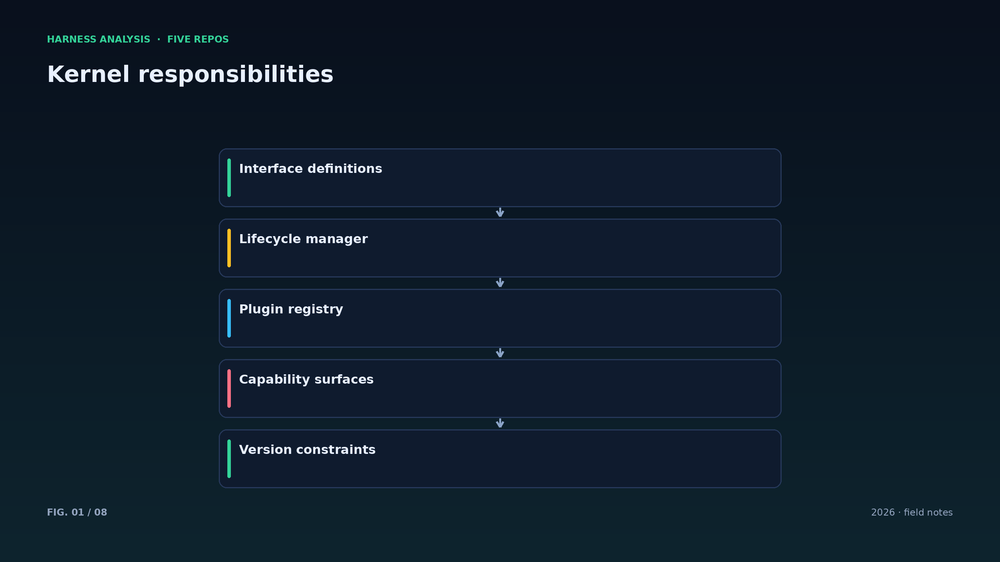
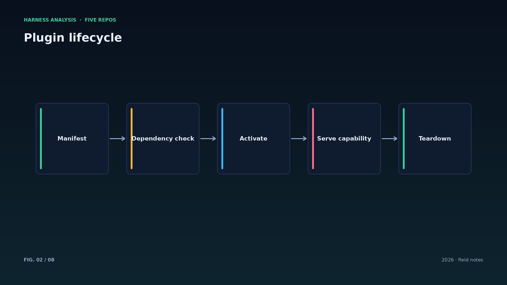
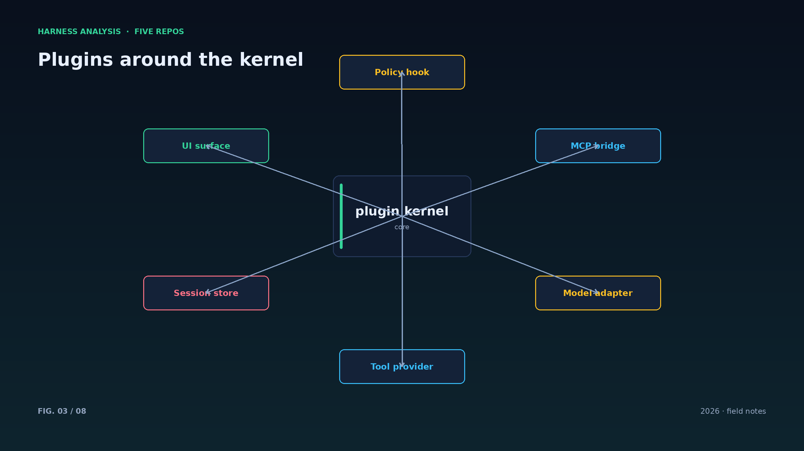
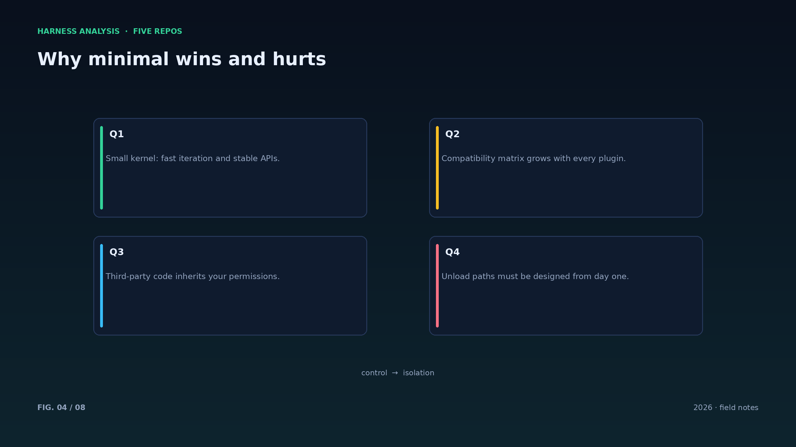
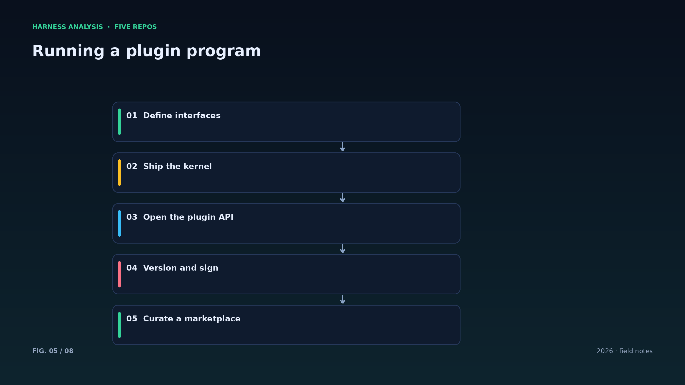
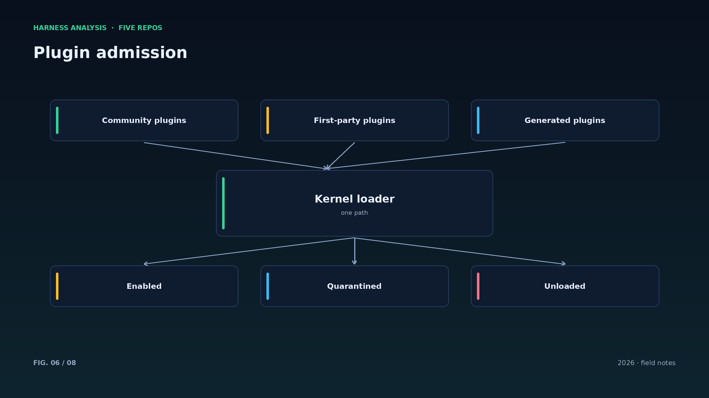
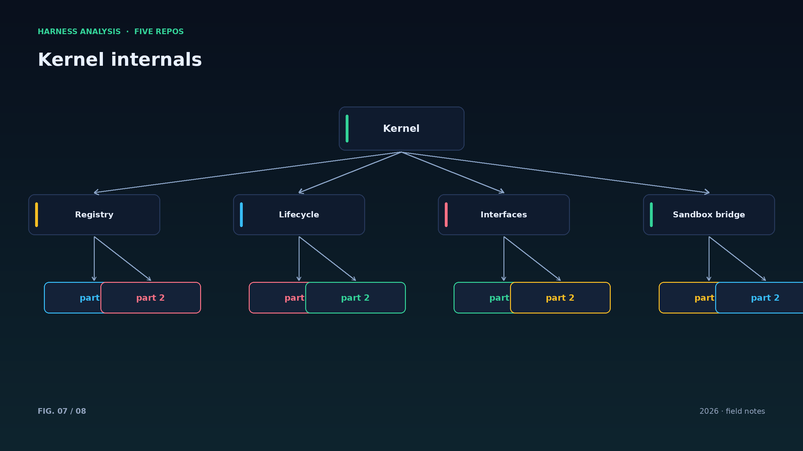
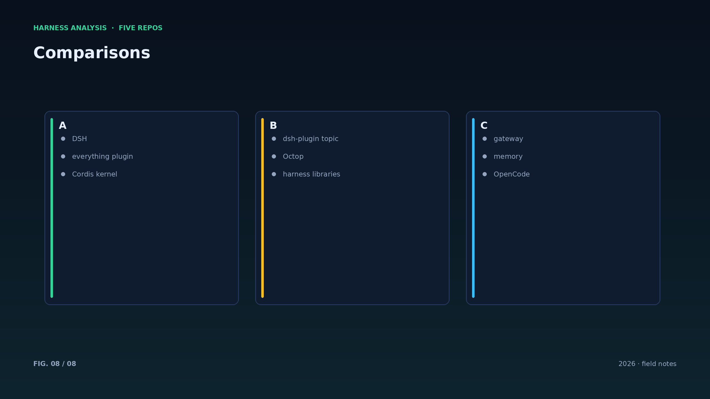

harness analysis · 04
插件内核：DSH 为什么让内核“什么都不会”
The Plugin Kernel: Why DSH Keeps Its Core Ignorant
deepseek-harness 的内核只做插件调度：模型、工具、界面、策略都是插件。这一篇分析这种极简内核的收益、代价与落地约束。
DSH 的架构建立在 Cordis 之上，把“一切皆插件”作为第一原则：内核定义接口与生命周期，能力以插件形式装卸。这样内核可以长期稳定，生态可以自由生长——社区插件用 dsh-plugin 话题聚合，迭代不必等待内核发版。
收益显而易见：新增模型适配器、替换 UI、接入 MCP 工具都不需要改内核；插件可以独立发布、独立回滚。对一个开发者预览期的项目，这种演进速度就是竞争力。
代价同样明确：插件边界与版本兼容会成为新的复杂度来源；装一个插件等于在权限边界内运行第三方代码，供应链安全必须被当作一等公民；插件之间的隐式依赖会让“最小内核”名不副实。
落地约束有三条：接口版本化要严格；插件必须声明所需权限；内核要能隔离插件故障，别让一个坏插件拖垮整个会话。做到这三点，“极简内核”才是资产而不是债务。
内核 API 的稳定性比功能数量更重要：接口一旦发布就要承诺兼容周期，否则插件生态永远长不大。DSH 把接口版本与内核版本分开管理，是值得借鉴的做法。
插件的健康度也要度量：加载耗时、错误率、资源占用都应有指标；能一键回滚的插件系统，比“永不宕机”的承诺更实际。
插件市场的治理比插件机制更难：审核、签名、版本兼容矩阵、弃用策略，缺一个都会让生态变成负担。先有治理，再谈市场。
内核与插件之间要有“契约测试”：接口变更时自动跑一遍兼容性用例，比人工 review 可靠得多。
最后，插件化不是目的：如果团队只有一个模型、三五个工具，单体 harness 反而更省心。别为了架构美感引入不必要的边界。
Architecture figures








ENGLISH
The Plugin Kernel: Why DSH Keeps Its Core Ignorant
The deepseek-harness core only schedules plugins: models, tools, UI and policy are all plugins. This piece analyzes the gains, costs and constraints of such a minimal kernel.
DSH builds on Cordis with one principle: everything is a plugin. The kernel defines interfaces and lifecycle; capabilities are installed and removed as plugins. The kernel can stay stable while the ecosystem grows — community plugins gather under the dsh-plugin topic, and iteration does not wait for a kernel release.
The gains are obvious: new model adapters, alternate UIs and MCP tools need no kernel changes; plugins ship and roll back independently. For a developer-preview project, that speed is the competitive edge.
The costs are equally clear: plugin boundaries and version compatibility become the new complexity; installing a plugin means running third-party code inside your permission boundary, so supply-chain security becomes first-class; implicit dependencies between plugins can make a "minimal kernel" a fiction.
Three constraints make it work: strict interface versioning, explicit permission declarations per plugin, and fault isolation so one bad plugin cannot take down a session. With those, a minimal kernel is an asset rather than a debt.
Kernel API stability matters more than feature count: once published, an interface needs a compatibility window or the plugin ecosystem never grows. DSH manages interface versions separately from kernel versions — a pattern worth borrowing.
Marketplace governance is harder than the plugin mechanism itself: review, signing, a compatibility matrix and a deprecation policy. Miss one and the ecosystem becomes a liability. Governance first, market second.
Put contract tests between kernel and plugins: rerun compatibility cases on every interface change. It beats human review and it scales with the plugin count.